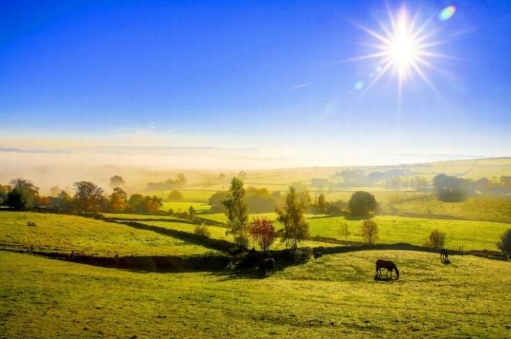
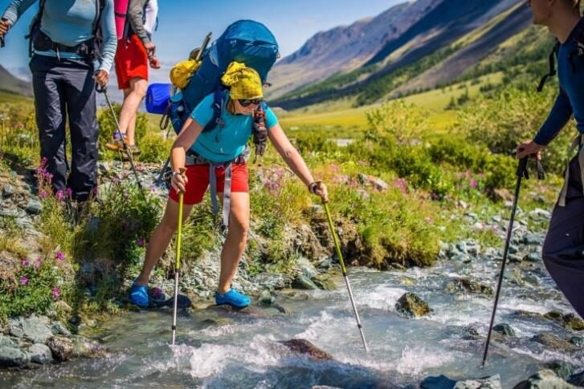
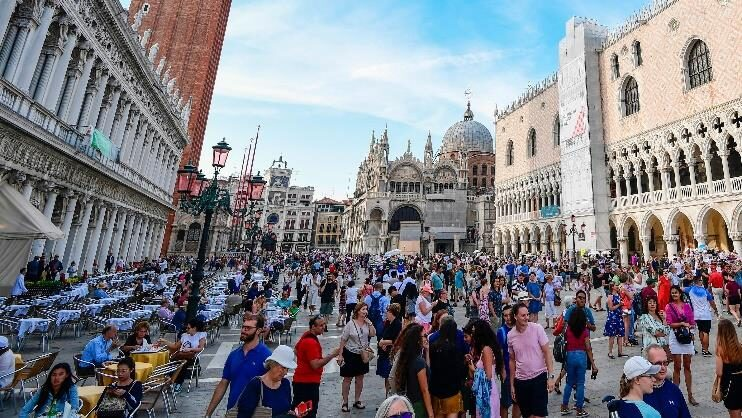
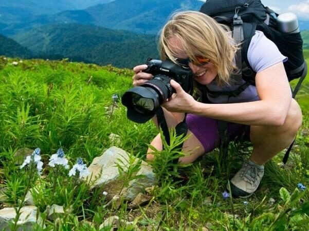
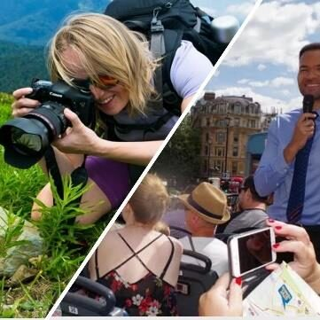
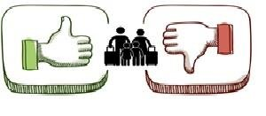
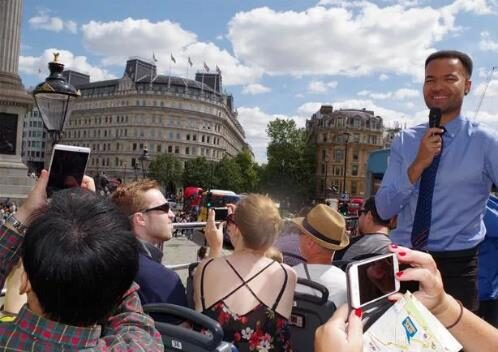
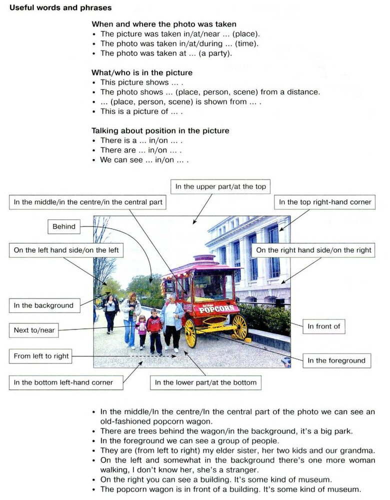
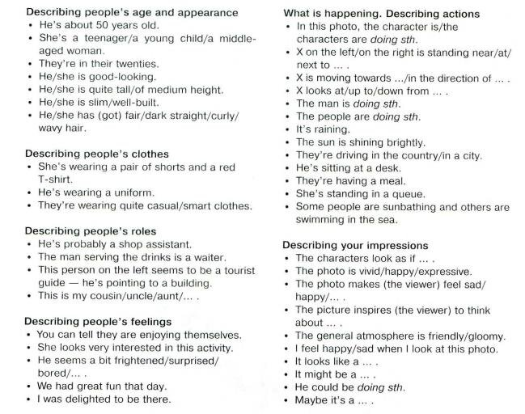
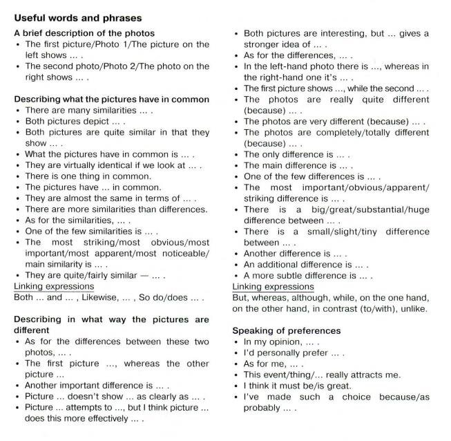

Путешествие по своей стране и за рубежом.
Осмотр достопримечательностей
Это интерактивная рабочая тетрадь для отработки Задания 4 устной части. Материал построен по кейсу «1_Кейс ЕГЭ 2024_Путешествие по своей стране и за рубежом. Осмотр достопримечательностей_ Uch 4».
В тетради 9 страниц: Task 1 (описание трёх фото), Task 2 (распределение лексики), Task 3 (плюсы/минусы), Task 4 (полное задание с шаблоном ответа), а также справочные страницы — план-схема, образец построения высказывания и полезные фразы и конструкции.
Впишите своё имя вверху страницы и нажмите «Начать», чтобы перейти к первой странице.

- What season is it now? How do you know that?
- What is the weather like?
- How can you describe the landscape?

- Where are the people?
- What is the lady dressed in?
- What are her emotions?

- What place in the city do we see in the photo?
- Why have the people come here?
- What problems can over-tourism cause to the locals?
Нажимайте на слова из word box, чтобы добавить их в свой ответ. Это задание не оценивается автоматически — устный ответ проверяет преподаватель.
Нажмите на слово в банке лексики ниже, затем нажмите на нужную колонку (the first photo / BOTH / the second photo), чтобы распределить его.

The first photo

BOTH

The second photo
Распределите все 18 слов по колонкам, затем нажмите «Проверить Task 2», чтобы увидеть предложенный вариант для самопроверки (это авторский вариант распределения, а не официальный ключ ФИПИ).

ADVANTAGES
DISADVANTAGES
Свободное задание — фиксируется как выполненное, преподаватель проверяет содержание отдельно.
- explain the choice of the illustrations for the project by briefly describing them and noting the differences;
- mention the advantages (1–2) of the two types of tourism;
- mention the disadvantages (1–2) of the two types of tourism;
- express your opinion on the subject of the project – which of the types of tourism presented in the pictures you'd prefer and why.


You may use the following construction for your EXAM TASK ANSWER
Hello, Sveta! You know what, I have found two pictures, which to my mind can illustrate our project
You see, they both relate to
One picture shows
In the other photo we can see
These photos have certain differences. The first one is the following.
Another difference is that
As for the advantages of travelling alone, I can say that
The main advantage/s of travelling in a group is/are the following
As for the disadvantages of these types of tourism,
Well, these photos are ideal for our project “______” as
As for me, I would like to travel
I think so because
That is all I wanted to tell you about the photos, call me back soon and let me know what you think about the photos.
Заполните шаблон своими словами. Это тренировочная запись устного высказывания — она не оценивается автоматически.
План-схема для Задания 4. Устная часть
Образец построения высказывания
Hello, Sveta! I have found two pictures which to my mind can illustrate our project “Mass tourism”. I would like to discuss them with you.
The first photo shows a lady who is travelling somewhere in the wild, we can see hilly mountains in the background. She has a professional camera and she is taking a photo of some plants, I suppose, rare species. In the second photo we can see a group of tourists on a double–decker, they are on a sightseeing tour in some city. They are listening to the guide and taking pictures of the surrounding buildings.
These photos have a difference that is really important for our project. In the first photo the lady is travelling solo, there are no companions with her, while in the second photo there is a group of people. Another difference worth mentioning is that in the first photo the lady has chosen some natural destination off the beaten track, such places are usually popular among individual travellers. In the second photo the people are on a city tour, usually these tours are for groups.
Speaking about the advantages of the two types of tourism I can say that alone you always have a chance to relax, unwind and recharge and meditate. On the other hand, if you are with a group of mates, you feel safer and can always get advice from more experienced travellers. But both ways of travelling have disadvantages as well. For example, if you are alone in an unknown place, you can get lost. In case with travelling in a group you can be disturbed by others when you listen to the guide.
As for my opinion, I can say that I would like to travel in a group, with my friends and relatives. I am a sociable person and I like it when there is someone I can share my emotions with, discuss what I see and just have fun together.
So, I think that is all I wanted to tell you about the photos for our project. Let me know what you think about them.
Полезные фразы и конструкции для построения высказывания
Задание 4. Раздел «Устная речь»
Introduction
Explain the choice of the illustrations for the project by briefly describing them and noting the differences
Mention the advantages (1–2) of the two types …
Mention the disadvantages (1–2) of the two types …
Express your opinion on the subject of the project – whether you/what you/how you/where you … and why
Conclusion
Полезные фразы и выражения для описания картинок из пособия «Effective Speaking».
Иллюстрации из пособия «Effective Speaking»



Проверка и отправка
Впишите своё имя вверху страницы (если ещё не сделали этого) и нажмите кнопку ниже. Будет автоматически проверено задание Task 2, остальные задания отмечаются как выполненные — их содержание проверяет преподаватель.